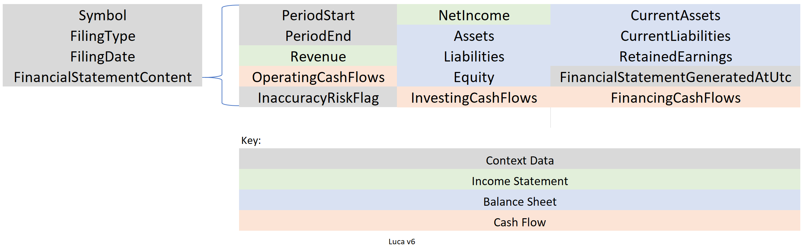
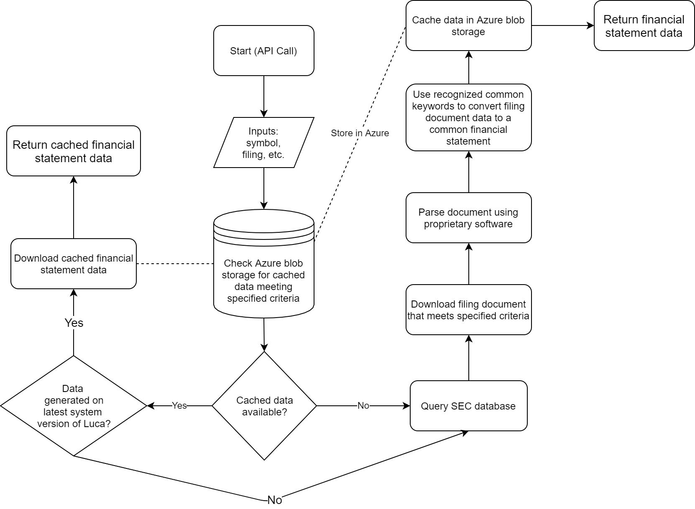

Accessible financial data
Luca provides historical financial data for any publically traded company that reports to the US Securities Exchange Commission through a free-to-use REST API. Below are several examples of financial statement data that Luca returns.
Data Packet Structure:
Example Responses
{"Symbol":"MSFT","FilingType":"10-K","FilingDate":"2019-08-01T00:00:00","FreshlyGenerated":false,"FinancialStatementContent":{"PeriodStart":"2018-07-01T00:00:00","PeriodEnd":"2019-06-30T00:00:00","InaccuracyRiskFlag":false,"FinancialStatementGeneratedAtUtc":"2020-06-21T15:49:59.3539759Z","Revenue":1.25843E+11,"NetIncome":3.924E+10,"Assets":2.86556E+11,"Liabilities":1.84226E+11,"Equity":1.0233E+11,"Cash":1.1356E+10,"CurrentAssets":1.75552E+11,"CurrentLiabilities":6.942E+10,"RetainedEarnings":2.415E+10,"OperatingCashFlows":5.2185E+10,"InvestingCashFlows":-1.5773E+10,"FinancingCashFlows":-3.6887E+10}}
{"Symbol":"AMZN","FilingType":"10-Q","FilingDate":"2017-10-27T00:00:00","FreshlyGenerated":true,"FinancialStatementContent":{"PeriodStart":"2017-01-01T00:00:00","PeriodEnd":"2017-09-30T00:00:00","InaccuracyRiskFlag":true,"FinancialStatementGeneratedAtUtc":"2020-06-21T15:59:51.3469204Z","Revenue":1.17413E+11,"NetIncome":1.176E+09,"Assets":1.15267E+11,"Liabilities":9.0609E+10,"Equity":2.4658E+10,"Cash":1.2767E+10,"CurrentAssets":4.8578E+10,"CurrentLiabilities":4.7072002E+10,"RetainedEarnings":6.779E+09,"OperatingCashFlows":6.09E+09,"InvestingCashFlows":-2.5787E+10,"FinancingCashFlows":1.2507E+10}}
{"Symbol":"TSLA","FilingType":"10-K","FilingDate":"2020-02-13T00:00:00","FreshlyGenerated":true,"FinancialStatementContent":{"PeriodStart":"2019-01-01T00:00:00","PeriodEnd":"2019-12-31T00:00:00","InaccuracyRiskFlag":false,"FinancialStatementGeneratedAtUtc":"2020-06-21T16:00:47.661405Z","Revenue":2.4578E+10,"NetIncome":-862000000.0,"Assets":3.4309E+10,"Liabilities":2.6199E+10,"Equity":6.618E+09,"Cash":6.2680003E+09,"CurrentAssets":1.2103E+10,"CurrentLiabilities":1.0667E+10,"RetainedEarnings":-6.083E+09,"OperatingCashFlows":2.405E+09,"InvestingCashFlows":-1.436E+09,"FinancingCashFlows":1.5289999E+09}}
Documentation
All API calls are made via an HTTP GET request.
Base URL:
https://projectluca.azurewebsites.net/api/GetFinancials
Parameter #1 - symbol
required
The trading symbol of the company that you are requesting. i.e. AAPL, MSFT, GOOG. Examples:
symbol=msft
symbol=intc
symbol=aapl
symbol=goog
Parameter #2 - filing
required
Designates the time period your are requesting. 10-K filings are annual filings, meaning that the period-focused data (i.e. revenue, net income) are over the course of 12 months. 10-Q filings are quarterly, over a 3 month period.
You have two options to choose from: 10k for an annual data, or 10q for quarterly data.
filing=10k
filing=10q
Parameter #3 - before
If you would like to get a filing that happened before a specific date, use the 'before' parameter. For example, if I wanted to get the most recent annual filing as of May 1, 2018, I would specify that here.
Dates are in the MMDDYYYY format. (i.e. May 1, 2020 would be '05012020')
This parameter is optional. If not provided, you will have the latest requested document returned to you.
before=01012017
before=07012019
before=05012018
Parameter #4 - forcecalculation
Luca maintains a financial data cache. This cache uses previously calculated data to eliminate unnecessary processing time and drastically reduce the call response time. If you do not want to use this cache and would like to force the system to access the source documentation from the SEC directly, use this parameter.
You have two options to choose from: true and false. If omitted, the parameter will default to false.
forcecalculation=true
forcecalculation=false
Full request examples (all are GET requests):
Requesting the latest 10-K report from Microsoft:
https://projectluca.azurewebsites.net/api/GetFinancials?symbol=msft&filing=10k
Requesting the most recent 10-Q (quarterly) filing from Amazon as of January 1, 2018 (will return a 10-K filed in 2017)
https://projectluca.azurewebsites.net/api/GetFinancials?symbol=amzn&filing=10q&before=01012018
Requesting the latest 10-K filing from Tesla and forcing the data to be freshly-sourced from the SEC database:
https://projectluca.azurewebsites.net/api/GetFinancials?symbol=tsla&filing=10k&forcecalculation=true
Peripheral Data
Luca also provides several peripheral functions to supply contextual data about the system itself.
Get current system version:
https://projectluca.azurewebsites.net/api/GetVersion
Get last system update time:
https://projectluca.azurewebsites.net/api/GetLastUpdateDateTime
Solution Architecture - how it works
Luca uses several cloud services provided by Microsoft Azure. Behind the scenes, Luca is leveraring the serverless compute power of Azure Functions to respond to incoming API calls. Azure Blob Storage is used as a database to cache financial data.
The process of querying the SEC database, parsing the documentation into a class definition, and then converting this to a financial statement can be very time consuming. Depending on many variables such as the size of the filing document, this process can take anywhere between 5 secons to 4 minutes. To alleviate this wait time, Luca uses a data caching method that can be followed in the flow chart seen above.
Upon a new request being received, the repository of financial data stored in Azure blob storage is checked first. If there is a a cached item that meets the specified criteria, this item is further examined. If this financial statement was generated after the most recent system update of Luca, this data is returned. This process ensures that you will never be returned data that was not retrieved by the latest version of Luca.
If data that meets the request was not found in azure or data was found but it was not up to date, a separate process is launched to gather the financial statement data from the SEC database directly. First, the SEC database is queried and the appropriate filing document is downloaded that meets the specified criteria. After download, the document is parsed into a class definition containing all included financial data. A separate class definition is then created and uses commonly used keywords to determine which data from the document correspond to data point in the returned object. This resulting object - the common financial statement - is then saved to Azure blob storage to be used for future requests; this ensures that the from-scratch sourcing does not need to occur multiple times. Finally, this financial statement data is returned to the caller.
Version Notes
v3 (June 7, 2020) - Added Cash Flow properties and improved exception handling and surfacing.
v4 (June 12, 2020) - Added the 'InaccuracyRiskFlag' property to the data packet. This indicates that a possible error with the XBRL filing was detected and the document may contain errors.
v5 (June 13, 2020) - Bug fixes related to the creation of Xbrl Instance Documents
v6 (June 20, 2020) - Instead of returning a financial statement directly, a "LucaDataPackage" object is now returned. This contains the Financial Statement as a nested object and provides other data related to the Luca service.
v7 (June 21, 2020) - Added 'FreshlyGenerated' property to returned data package, indicating if the content was previously generated or generated on-demand. Also some bug fixes.
v8 (June 21, 2020) - Bug fix related to the ForceCalculation option.
Disclaimer
Tim Hanewich assumes no responsibility or liability for any errors or omissions in the content of this service. The information contained in this site is provided on an "as is" basis with no guarentees of completeness, accuracy, usefulness, or timeliness and without any warranties of any kind whatsoever, express or implied. Tim Hanewich does not warrant that this site and any information or material downloaded from this site will be uninterrupted, error-free, or omission-free.